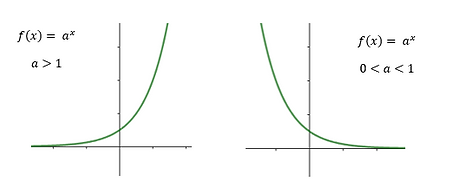

|
Como foi apresentado na seção de propriedades, o gráfico da função exponencial não toca o eixo X, ela se aproxima do eixo, mas nunca o toca. Além disso, ela pode ser crescente ou decrescente, passando no eixo Y pelo ponto (0,1). Assim, seus gráficos podem assumir os seguintes formatos:  |
|